1과목: 수처리공정
1. 급속혼화시설에서 계획정수량에 대한 플록형성시간은 얼마인가?
2. 급속모래여과지가 정수처리 공정에서 필요로 하는 기능을 모두 고른 것은?
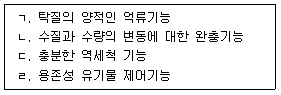
3. 여과지에서의 크립토스포리디움 대책이 아닌 것은?
4. 모래여과지의 세척배출수거와 트로프는 각 항에 따른다. ( )에 들어갈 내용을 순서대로 나열한 것은?
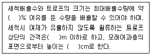
5. 처리 유량이 1,200m3/day, 침전지 유효수심 4m, 체류시간이 4시간 일 때 침전지의 소요 면적(m2)은?
6. 침전지의 제거율을 향상시키기 위한 사항을 모두 고른 것은?
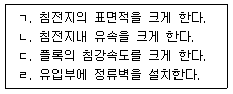
7. 랑게리아지수에 관한 설명으로 옳지 않은 것은?
8. 입상활성탄에 의한 제거목표 물질이 아닌 것은?
9. ( )에 들어갈 내용을 순서대로 나열한 것은?
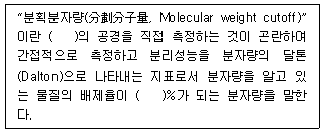
10. 경수를 연화시키기 위한 방법이 아닌 것은?
11. 다량의 조류가 유입되었을 때 정수처리에 미치는 영향으로 옳지 않은 것은?
12. 고속응집침전지를 선택할 때 조건을 고려하지 않아도 되는 것은?
13. 여과지의 하부집수장치 기능으로 옳은 것은?
14. 급속여과지의 세척방식으로 옳지 않은 것은?
15. 염소소독시 살균력이 증가되는 온도와 pH 조건은?
16. 배오존처리방법이 아닌 것은?
17. 여과지 성능 평가 방법이 아닌 것은?
18. 20,000m3/day를 처리하는 정수장 원수에 암모니아성질소가 5.8mg/L이다. 원수에 포함된 암모니아성질소를 파괴점 염소주입법에 의하여 제거하고자 한다. 암모니아성질소 1mg/L에 대하여 염소가 7.6mg/L 필요할 때, 염소의 양(kg/day)은 약 얼마인가?
19. 자외선 소독에서 Log 불활성화가 2.0일 때 자외선 조사요구량(mJ/cm2)이 큰 미생물 순서로 옳은 것은?
20. 탈수 슬러지의 재활용 방법이 아닌 것은?
2과목: 수질분석 및 관리
21. 자-테스트(Jar-Test)를 통해 약품주입율이 결정되는 수처리제로 옳지 않은 것은?
22. 침전지에서 침전효율을 측정할 때 측정항목으로 옳지 않은 것은?
23. 먹는물수질공정시험기준상 총칙에 관한 설명으로 옳은 것은?
24. 먹는물수질공정시험기준상 이온크로마토그래피법으로 측정하는 수질항목으로 옳은 것은?
25. 물환경보전법상 용어의 정의로 옳지 않은 것은?
26. 수도법령상 정수장에 대한 기술진단의 대상 시설이 아닌 것은?
27. 수질오염공정시험기준상 적정법으로 측정하는 수질항목으로 옳은 것을 모두 고른 것은?
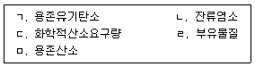
28. 유량이 50,000m3/day인 표준정수처리시설에서 침전지 잔류염소농도는 0.4mg/L이며, 여과지 유출수 잔류염소농도는 0.2mg/L이다. 정수지 잔류염소농도가 0.8mg/L 요구될 때 후염소주입량(kg/day)은?
29. 소독에 의한 불활성화비 계산방법에 관한 설명으로 옳은 것은?
30. 활성탄여과지의 역세척효율을 측정하는 방법으로 옳지 않은 것은?
31. 먹는물수질공정시험기준상 미생물에 관한 시험방법과 사용되는 배지로 옳지 않은 것은?
32. 수질오염공정시험기준상 시료의 보존용기가 갈색유리병을 사용하여야 하는 것은?
33. 먹는물관리법상 환경부장관 또는 특별시장ㆍ광역시장ㆍ특별자치시장ㆍ도지사ㆍ특별자치도지사가 수질검사를 실시하여야 하는 대상으로 옳은 것으로 모두 고른 것은?
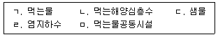
34. 먹는물수질공정시험기준상 맛 측정에 관한 설명으로 옳은 것은?
35. 먹는물 수질기준 및 검사 등에 관한 규칙상 불소의 수질기준으로 옳은 것은?
36. 먹는물 수질감시항목 운영 등에 관한 고시상 정수의 감시항목으로 옳지 않은 것은?
37. 먹는물수질공정시험기준상 경도-EDTA 적정법에 관한 설명으로 옳은 것은?
38. 수도법상 수도정비기본계획에 관한 설명으로 옳지 않은 것은?
39. 수질오염공정시험기준상 용존산소-적정법에 관한 설명이다. ( )에 들어갈 내용 을 순서대로 나열한 것은?
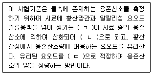
40. 수돗물 10,000m3/h를 생산하는 정수장에서 주입오존농도 3.0mg/L, 전달율 98% 및 이용률 95%일 때 물에 잔류하는 오존량(kg/h)은?
3과목: 설비운영(기계·장치 또는 계측기 등)
41. 정수처리시설의 농축조에 관한 설명으로 옳지 않은 것은?
42. 약품주입설비에서 정수용 약품과 내식성 재료의 연결이 옳지 않은 것은?
43. 가압수확산에 의한 혼화방식에 관한 설명으로 옳지 않은 것은?
44. 다음은 침전지의 제거율을 향상시키는 고려사항이다. ( )에 들어갈 내용으로 옳은 것은?
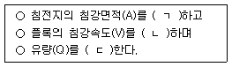
45. 막여과설비에 관한 설명으로 옳지 않은 것은?
46. 급속여과지 여과기능의 분류로 옳지 않은 것은?
47. 1급 입상활성탄의 충전밀도(g/cc)와 요오드흡착능(mg/g)의 규격으로 옳은 것은?
48. 전기설비기술기준의 판단기준에서 전로의 절연저항 및 절연내력에 관한 설명이다. ( )에 들어갈 알맞은 내용으로 옳은 것은?
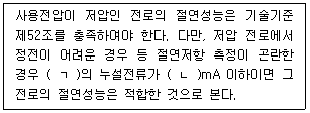
49. 정수장에서 전동기가 직결인 경우 다음과 같은 조건에서 원동기 출력을 이용할 때 전양정(m)은 약 얼마인가?
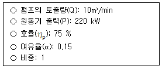
50. 전력설비의 안전대책 고려사항으로 옳지 않은 것은?
51. 몰드변압기의 내열등급에 해당하지 않는 것은?
52. 산업안전보건기준에 관한 규칙상 체인블록(chain block)을 사용하는 경우 준수하여야 할 사항으로 옳지 않은 것은?
53. 산업안전보건법령상 안전ㆍ보건표지 중 ‘산화성물질 경고’ 표지는?
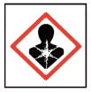
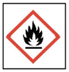
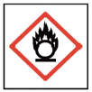
54. 다음 중 축전지를 충전용 기기와 병렬로 접속하여 축전지의 자기방전을 보충하는 정도의 소전류로 충전하여 항상 충전상태를 유지하는 충전방식으로 옳은 것은?
55. 가압탈수기의 여과포의 선정조건으로 옳지 않은 것은?
56. 기계실과 전기실에 관한 설명으로 옳지 않은 것은?
57. 전기 전도도 계측기를 기본적으로 설치하는 공정은?
58. 유도전동기의 무부하 여자용량 이상의 콘덴서를 직결한 경우에 회로개방 후에도 콘덴서의 잔류전하에 의하여 전동기의 단자전압은 영으로 되지 않고 상승하거나 또는 상당한 시간동안 감소하지 않는 현상은 무엇인가?
59. 차압식 수위계의 특징이 아닌 것은?
60. 연구실 안전환경 조성에 관한 법률에서 정의하는 용어로서 옳지 않은 것은?
4과목: 정수시설 수리학
61. 다음 식에 관한 설명으로 옳은 것은?
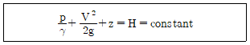
62. 다음 중 [MLT]계 차원과 [FLT]계 차원으로 표기했을 때, 동일한 차원으로 표기 되는 것을 모두 고른 것은?
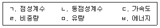
63. 송수할 유량은 0.2m3/sec, 관로길이는 200m, 관경은 20cm이다. 관로 상에서 발생하는 손실수두가 7.5m일 때, 마찰손실계수는 약 얼마인가?
64. 물에 관한 에너지방정식에서 에너지보정계수(α)에 관한 설명으로 옳은 것은?
65. 마찰손실계수가 0.0245인 수로 흐름에서, 평균유속이 4m/sec일 때, 마찰속도(m/sec)는 약 얼마인가?
66. 펌프의 병렬운전에 관한 설명으로 옳지 않은 것은?
67. 관로의 저항곡선에 관한 설명으로 옳지 않은 것은?
68. 급속혼화에 관한 설명으로 옳은 것은?
69. 수심이 2m인 개수로에서 수면 아래 0.4m와 1.6m에서의 평균 유속이 각각 2m/sec와 1 m/sec일 때, 평균유속(m/sec)은?
70. 플록형성에 관한 설명으로 옳지 않은 것은?
71. 체류시간 8hr, 표면적 200m2, 유량 2,100m3/day인 침전지의 유효깊이(m)는?
72. 펌프의 축동력이 4.9kW일 때, 유량 0.⑤m3/sec를 양수할 수 있는 실양정(m)은? (단, 손실수두는 1.0m, 펌프 효율은 70%이다.)
73. ( )에 들어갈 내용으로 옳은 것은?
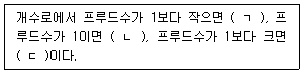
74. 펌프의 특성곡선을 통해 확인할 수 있는 항목 묶음으로 옳은 것은?
75. 매끈한 유리관 내 물 흐름의 레이놀즈수가 10,000일 때, Blasius의 공식으로 구한 마찰손실계수는?
76. Manning 공식으로 구한 유속이 4m/sec이다. 동일 조건으로 조도계수가 2배 증가할 때, 유속(m/sec)은?
77. 양수량 23,040m3/day, 총양정 16m, 회전속도 800rpm인 펌프의 비속도는?
78. 급속여과지에 관한 설명으로 옳은 것을 모두 고른 것은?
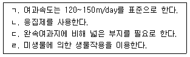
79. 물이 가득차서 흐르는 원형관의 동수반경이 20 cm일 때, 관의 직경(m)은?
80. 유량계에 관한 설명으로 옳지 않은 것은?